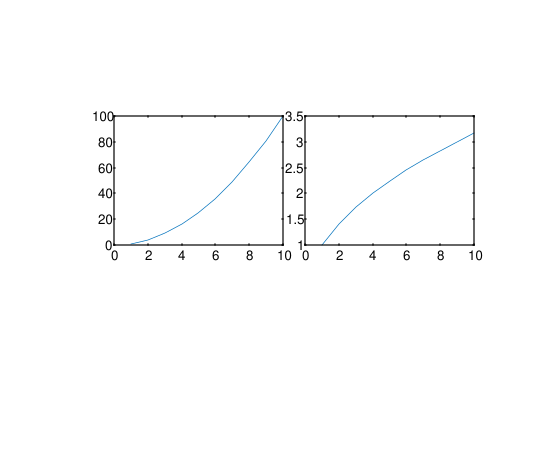

t = tiledlayout
t = tiledlayout(m, n)
t = tiledlayout(arrangement)
t = tiledlayout(parent, ...)
t = tiledlayout(..., propertyName, propertyValue)
| Paramètre | Description |
|---|---|
| m | Nombre de lignes de tuiles : entier positif. |
| n | Nombre de colonnes de tuiles : entier positif. |
| arrangement | 'flow', 'vertical' ou 'horizontal' : mode de disposition automatique. |
| parent | Poignée de la figure parente. |
| propertyName | Nom de la propriété : 'TileSpacing', 'Padding', 'TileIndexing' ou autre propriété de disposition. |
| propertyValue | Valeur de la propriété correspondant au nom de la propriété. |
| Paramètre | Description |
|---|---|
| t | Objet graphique TiledChartLayout. |
tiledlayout crée une disposition en mosaïque dans la figure courante pour afficher plusieurs tracés dans une grille.
tiledlayout sans argument d'entrée crée une disposition de type flux.
tiledlayout(m, n) crée une disposition avec m lignes et n colonnes de tuiles.
tiledlayout('flow') crée une disposition qui ajuste automatiquement la grille au fur et à mesure que des axes sont ajoutés. tiledlayout('vertical') empile les axes de haut en bas, et tiledlayout('horizontal') les empile de gauche à droite.
Utilisez nexttile pour créer des axes dans la disposition.
Propriétés :
| Propriété | Description |
|---|---|
| GridSize | Dimensions de la grille [m, n]. Cette propriété ne peut être définie que lorsque la disposition est vide ; la définir manuellement change TileArrangement en 'fixed'. |
| TileArrangement | Disposition en lecture seule : 'fixed', 'flow', 'vertical' ou 'horizontal'. |
| TileSpacing | Espacement entre les tuiles : 'loose', 'compact', 'tight' ou 'none'. La valeur héritée 'normal' est acceptée comme 'loose'. |
| Padding | Marge autour de la disposition : 'loose', 'compact' ou 'tight'. La valeur héritée 'normal' est acceptée comme 'loose', et 'none' est acceptée comme 'tight'. |
| TileIndexing | Ordre de numérotation des tuiles : 'rowmajor' ou 'columnmajor'. |
| Title, Subtitle, XLabel, YLabel | Objets texte appartenant à la disposition, utilisés par title, xlabel et ylabel. |
t = tiledlayout(2, 2);
ax1 = nexttile;
plot(ax1, 1:10, (1:10).^2);
ax2 = nexttile;
plot(ax2, 1:10, sqrt(1:10));
t.TileSpacing = 'compact';
| Version | Description |
|---|---|
| 1.17.0 | version initiale |